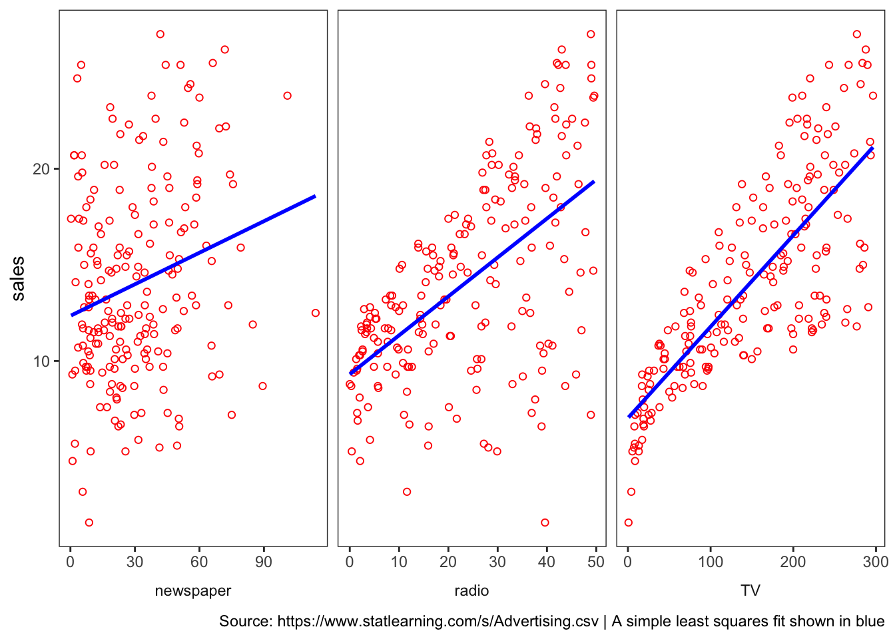
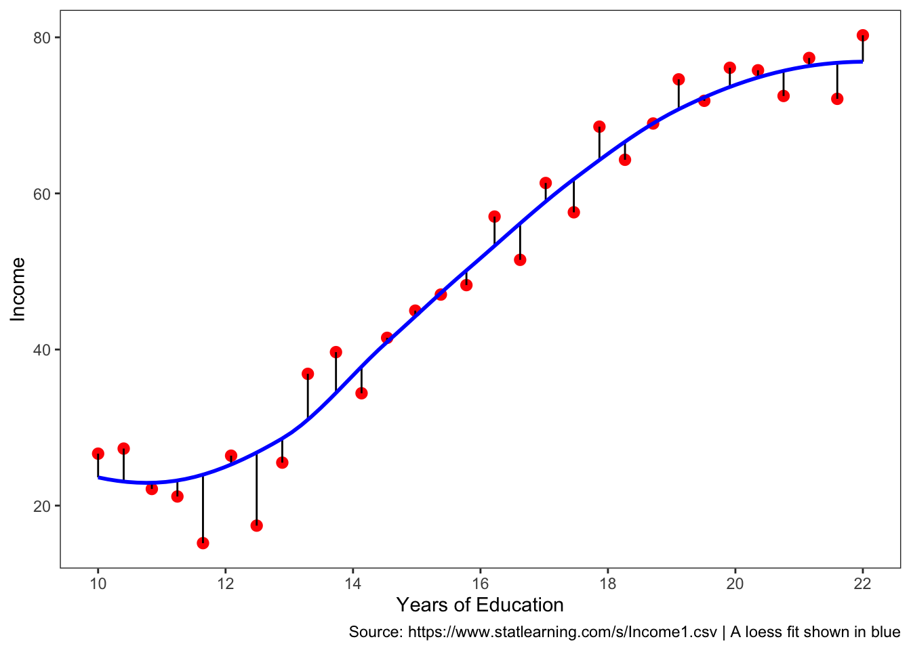
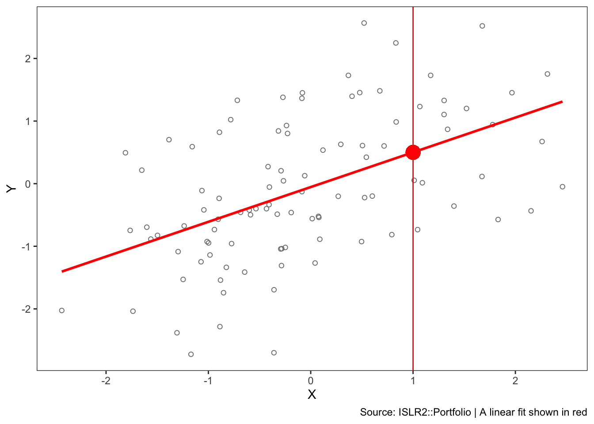

2.1 What is Statistical Learning?
The chapter opens with a discussion of what models are good for, how we use them, and some of the issues that are involved.
Can we predict Sales using ad media spending?
read_csv(
"https://www.statlearning.com/s/Advertising.csv",
col_types = "-dddd",
skip = 1,
col_names = c("row", "TV", "radio", "newspaper", "sales")
) %>%
pivot_longer(cols = -sales) %>%
ggplot(aes(value, sales)) +
geom_point(shape = 21, color = "red") +
geom_smooth(method = "lm", color = "blue",
se = FALSE, formula = "y ~ x") +
facet_wrap(vars(name),
scales = "free_x",
strip.position = "bottom") +
theme_bw() +
theme(strip.placement = "outside",
panel.grid = element_blank(),
strip.background = element_blank()) +
labs(x = NULL,
caption = "Source: https://www.statlearning.com/s/Advertising.csv | A simple least squares fit shown in blue")
You can make out a trend, at least in radio and TV.
We typically want to be able to characterize the Sales potential as a function of all three media inputs. How do they operate together?
Notation
In this setting, the advertising budgets are input variables while sales is an output variable. The input variables are typically denoted using the symbol \(X\), with a subscript to distinguish them.
So \(X_1\) might be the TV budget,
\(X_2\) the radio budget, and
\(X_3\) the newspaper budget.
The inputs go by different names, such as predictors, independent variables, features, or sometimes just variables.
The output variable in this case, sales is often called the response or dependent variable, and is typically denoted using the symbol \(Y\).
We assume that there is some relationship between \(Y\) and \(X = (X_1, X_2,\dots,X_p)\), which can be written in the very general form
\[\begin{equation} y = f(X) + \epsilon \end{equation}\]Here \(f\) is some fixed but unknown function of \(X_1, \dots, X_p\), and \(\epsilon\) is a random error term, which is independent of \(X\) and has a mean of zero. In this formulation, \(f\) represents the systematic information that \(X\) provides about \(Y\).
What is the \(f(X)\) good for?
With a good \(f\) we can make predictions of \(Y\) at new points.
We can understand which components are important in explaining \(Y\), and which components are irrelevant.
Depending on the complexity of \(f\), we may be able to understand how each component of \(X_j\) of \(X\) affects \(Y\).
read_csv("https://www.statlearning.com/s/Income1.csv",
col_types = "-dd",
skip = 1,
col_names = c("row", "Education","Income")) %>%
mutate(res = residuals(loess(Income ~ Education))) %>%
ggplot(aes(Education, Income)) +
geom_point(shape = 20, size = 4, color = "red") +
geom_segment(aes(xend = Education, yend = Income - res)) +
geom_smooth(method = "loess", se = FALSE, color = "blue",
formula = "y ~ x") +
scale_x_continuous(breaks = seq(10,22,2)) +
theme_bw() +
theme(panel.grid = element_blank()) +
labs(x = "Years of Education",
caption = "Source: https://www.statlearning.com/s/Income1.csv | A loess fit shown in blue") 
The vertical lines represent the error terms \(\epsilon\). That is, the difference between the model estimate and the observed value.
2.1.1 Why Estimate \(f\)?
There are two main reasons that we may wish to estimate \(f\): prediction and inference.
Prediction
In many situations, a set of inputs \(X\) are readily available, but the output \(Y\) cannot be easily obtained. We can predict \(Y\) using
\[\begin{equation} \hat{Y} = \hat{f}(X) \end{equation}\]\(\hat{f}\) is often treated as a black box,
One is not typically concerned with the exact form of \(\hat{f}\), provided that it yields accurate predictions for Y.
The accuracy of \(\hat{Y}\) as a prediction for \(Y\) depends on two quantities, called the reducible error and the irreducible error.
Reducible Error We can reduce the gap between our estimate and the true function by applying improved methods.
Irreducible Error The quantity \(\epsilon\) may contain unmeasured variables that are useful in predicting \(Y\) : since we don’t measure them, \(f\) cannot use them for its prediction. The quantity \(\epsilon\) will also contain unmeasurable variation.

The focus of the book is on techniques for estimating \(f\) with the aim of minimizing the reducible error.
Inference
We are often interested in understanding the association between \(Y\) and \(X = (X_1, X_2,\dots,X_p)\). In this situation we wish to estimate \(f\), but our goal is not necessarily to make predictions for \(Y\). Now \(f\) cannot be treated as a black box, because we need to know its exact form. In this setting, one may be interested in answering the following questions:
Which predictors are associated with the response?
What is the relationship between the response and each predictor?
Can the relationship between Y and each predictor be adequately summarized using a linear equation, or is the relationship more complicated?
Consider the Advertising data. One may be interested in answering questions such as:
– Which media are associated with sales?
– Which media generate the biggest boost in sales? or
– How large of an increase in sales is associated with a given increase in TV advertising?
2.1.2 How do we estimate \(f\)?
We want to find a function \(f\) such that \(Y ≈ f(X)\) for any observation. Broadly speaking, most statistical learning methods for this task can be characterized as either parametric or non-parametric.
Parametric Methods
Parametric methods involve a two-step model-based approach.
First we make an assumption about the functional form of \(f\)
After a model is selected, we apply a procedure to fit or train the model.
The potential disadvantage of a parametric approach is that the model we choose will usually not match the true unknown form of \(f\). If the chosen model is too far from the true \(f\), then our estimate will be poor.
We can try to address this problem by choosing more flexible models that can fit many different possible functional forms for \(f\).
These more complex models can lead to a phenomenon known as overfitting the data, which essentially means they follow the errors, or noise, too closely.
ISLR2::Portfolio %>%
ggplot(aes(X, Y)) +
geom_point(shape = 21, color = "gray50") +
geom_smooth(method = "lm", color = "red",
se = FALSE, formula = "y ~ x") +
geom_point(x = 1, y = 0.5, shape = 20,
color = "red", size = 8) +
geom_vline(xintercept = 1, color = "red") +
theme_bw() +
theme(panel.grid = element_blank()) +
labs(caption = "Source: ISLR2::Portfolio | A linear fit shown in red") 
In a given dataset, there may be many observed values of \(Y\) for each \(X\). In this regression example, the expected value of Y given X = 1 is 0.5.
The value of 0.5 is an average of sorts of the slice taken at x = 1.
Although it is almost never correct, a linear model often serves as a good and interpretable approximation.
Non-Parametric Methods
Non-parametric methods don’t make explicit assumptions about the functional form of \(f\)
Instead they seek an estimate of \(f\) that gets as close to the data points as possible without being too rough or wiggly.
Any parametric approach brings with it the possibility that the functional form used to estimate \(f\) on training data is very different from the true \(f\), in which case the resulting model will not fit unseen, new data well.
Non-parametric approaches do suffer from a major disadvantage:
A very large number of observations (far more a than is typically needed for a parametric approach) is required in order to obtain an accurate estimate for \(f\).
2.1.3 Prediction Accuracy vs Model Interpretability
Why would we ever choose to use a more restrictive method instead of a very flexible approach?
If we are mainly interested in inference, then restrictive models are often more interpretable.
Flexible approaches can lead to such complicated estimates of \(f\) that it is difficult to understand how any individual predictor is associated with the response.
2.1.4 Supervised Versus Unsupervised Learning
Supervised problems have labeled data with a response measurement, also called a dependent variable.
Unsupervised problems have no labels. The challenge is to derive clusters, or patterns, to better understand what is happening.
2.1.5 Regression Versus Classification Problems
Variables can be characterized as either quantitative or qualitative (categorical).
Quantitative variables take on numerical values.
In contrast, qualitative variables take on values in classes, or categories.